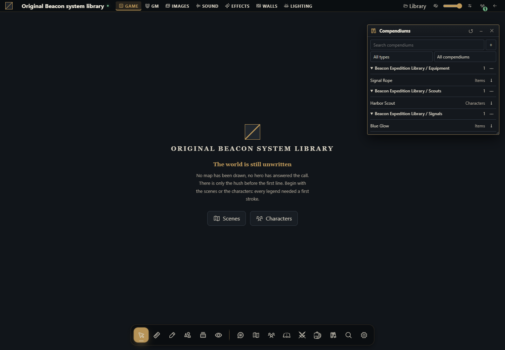

Como incluir compêndios em um sistema
Monte o pacote completo a partir de pasta vazia, instale e confira seu conteúdo original.


O que você vai construir
Você vai criar um único pacote de sistema chamado Beacon Expedition Library, contendo descritores de ator/item e um arquivo físico de compêndios. Depois da instalação e seleção na campanha, a aba Compendiums mostrará três packs: Scouts, Equipment e Signals. O GM importará Harbor Scout, Signal Rope e Blue Glow.
Esse é o caminho para conteúdo original distribuído junto de um sistema. Diferentemente do módulo de biblioteca, a coleção não é criada por um clique JavaScript: a instalação valida o JSON declarado e o host o oferece apenas quando aquela versão do sistema está ativa na campanha. O catálogo instalado é somente leitura; importar cria documentos da campanha que podem evoluir separadamente.
Use Gravewright 0.3.0, uma instalação descartável e a conta proprietária para instalar. O GM escolhe o sistema da campanha e importa os documentos. O pacote abaixo é completo como provedor de tipos e conteúdo; seu entry não registra fichas ou regras. Se quiser editar esses campos numa ficha personalizada, amplie o mesmo pacote usando o exemplo de ficha editável.
1. Comece em uma pasta vazia
Crie system-library e dentro dela compendiums. Salve todos os arquivos da seção 4. manifest.json registra system e content; main.mjs satisfaz start/register/stop sem executar ações; compendiums/beacon.json contém o conteúdo real; LICENSE.txt acompanha a distribuição. Não existe arquivo separado para instalar sob Módulos.
system-library/
manifest.json
main.mjs
compendiums/beacon.json
LICENSE.txt2. Entenda o vínculo antes de empacotar
O ID do sistema é example.beacon-library. Ele aparece no manifesto e no systemId de TODAS as entradas. actor_pack usa o tipo character de system.actorTypes. item_pack usa gear e spell_pack usa spell, ambos declarados em system.itemTypes. O core trata spell_pack como compatibilidade de item; ele não passa a implementar regras de magia.
content.compendiums aponta exatamente para compendiums/beacon.json. O arquivo tem nome de coleção e array packs; cada pack possui id, label, type e entries. Cada entrada tem id, name, type, systemId e data. Não acrescente campaigns: o host faz a associação à campanha ativa. Não use journal_pack, scene_pack, card_pack ou deck_pack neste pacote: a instalação aceita somente actor_pack, item_pack e spell_pack.
3. Empacote, instale e selecione
Partindo da pasta que contém system-library, use um dos comandos abaixo. Eles incluem o JSON aninhado com seu caminho correto, mantendo manifest.json na raiz. Use python3 em POSIX quando necessário.
POSIX
cd system-library
python -m zipfile -c ../system-library-source.zip "manifest.json" "main.mjs" "compendiums/beacon.json" "LICENSE.txt"PowerShell
Set-Location -LiteralPath .\system-library
python -m zipfile -c ..\system-library-source.zip "manifest.json" "main.mjs" "compendiums/beacon.json" "LICENSE.txt"Confira a raiz e o caminho compendiums/beacon.json com python -m zipfile -l ../system-library-source.zip. Como proprietário, abra Inside → Sistemas → Instalar sistema → Instalar de ZIP, selecione o ZIP e clique Instalar. Em inglês: Systems → Install system → Install from ZIP → Install. Abra uma campanha de teste usando Beacon Expedition Library como sistema. Confira nas Extensions da mesa a versão exata 1.0.0 ativada; apenas instalar uma versão não troca automaticamente a versão de campanhas existentes.
Abra Compendiums. Localize Beacon Expedition Library / Scouts, / Equipment e / Signals. Leia Harbor Scout: type é character e stamina é 8. Importe pelo controle nativo do pack. Repita para Signal Rope (gear, length 12) e Blue Glow (spell, color blue). Atores/itens importados aparecem nos seus diretórios da campanha.
4. Copie todos os arquivos
Para acrescentar seu conteúdo original, edite as entradas do JSON, mantendo IDs estáveis. Adicione tipos ao manifesto antes de usá-los nas entradas. data pertence ao sistema; stamina, length, color e duration são exemplos originais, não campos mágicos interpretados pelo host. O entry noop não cria documentos na ativação e não cria um catálogo duplicado a cada recarga.
manifest.json
{
"id": "example.beacon-library",
"name": "Beacon Expedition Library",
"version": "1.0.0",
"sdk": {
"requires": ">=1.0.0 <2.0.0",
"tested": "1.0.0"
},
"entry": "main.mjs",
"description": "Original actor and item types with three installed read-only compendium packs.",
"author": "Gravewright documentation",
"license": "MIT",
"system": {
"actorTypes": [
{
"id": "character",
"label": "Character"
}
],
"itemTypes": [
{
"id": "gear",
"label": "Gear"
},
{
"id": "spell",
"label": "Spell"
}
]
},
"content": {
"compendiums": [
"compendiums/beacon.json"
]
}
}main.mjs
export default {
start() {},
register() {},
stop() {},
};compendiums/beacon.json
{
"name": "Beacon Expedition Library",
"packs": [
{
"id": "scouts",
"label": "Scouts",
"type": "actor_pack",
"entries": [
{
"id": "harbor-scout",
"name": "Harbor Scout",
"type": "character",
"systemId": "example.beacon-library",
"data": {
"stamina": 8,
"role": "Watch keeper"
}
}
]
},
{
"id": "equipment",
"label": "Equipment",
"type": "item_pack",
"entries": [
{
"id": "signal-rope",
"name": "Signal Rope",
"type": "gear",
"systemId": "example.beacon-library",
"data": {
"length": 12,
"description": "An original training rope with blue knots."
}
}
]
},
{
"id": "signals",
"label": "Signals",
"type": "spell_pack",
"entries": [
{
"id": "blue-glow",
"name": "Blue Glow",
"type": "spell",
"systemId": "example.beacon-library",
"data": {
"color": "blue",
"duration": 1,
"description": "An original fictional signal, with no host automation."
}
}
]
}
]
}LICENSE.txt
MIT License
Copyright (c) 2026 Gravewright contributors
Permission is hereby granted, free of charge, to any person obtaining a copy
of this software and associated documentation files (the "Software"), to deal
in the Software without restriction, including without limitation the rights
to use, copy, modify, merge, publish, distribute, sublicense, and/or sell
copies of the Software, and to permit persons to whom the Software is
furnished to do so, subject to the following conditions:
The above copyright notice and this permission notice shall be included in all
copies or substantial portions of the Software.
THE SOFTWARE IS PROVIDED "AS IS", WITHOUT WARRANTY OF ANY KIND, EXPRESS OR
IMPLIED, INCLUDING BUT NOT LIMITED TO THE WARRANTIES OF MERCHANTABILITY,
FITNESS FOR A PARTICULAR PURPOSE AND NONINFRINGEMENT. IN NO EVENT SHALL THE
AUTHORS OR COPYRIGHT HOLDERS BE LIABLE FOR ANY CLAIM, DAMAGES OR OTHER
LIABILITY, WHETHER IN AN ACTION OF CONTRACT, TORT OR OTHERWISE, ARISING FROM,
OUT OF OR IN CONNECTION WITH THE SOFTWARE OR THE USE OR OTHER DEALINGS IN THE
SOFTWARE.5. Leia pela API e conceda leitura
No contexto de um módulo montado na mesma campanha, descubra IDs autorizados com api.compendiums.state. O pack terá ID native: gerado pelo host; não monte esse ID com o nome do arquivo. Esta função completa lê uma entrada de Scouts e retorna também os IDs para conceder leitura como GM:
export async function inspectScout(api, signal) {
const state = await api.compendiums.state({}, {signal});
const pack = state.packs.find(row => row.name === "Beacon Expedition Library / Scouts");
if (!pack) throw new Error("Activate the system version and check read grants");
const entry = pack.entries.find(row => row.id === "harbor-scout");
if (!entry) throw new Error("Scout entry unavailable");
const body = await api.compendiums.read({packId: pack.id, id: entry.id}, {signal});
return {packId: pack.id, entryId: entry.id, body};
}
export async function shareScouts(api, packId, signal) {
return api.compendiums.setPermissions({packId, level: "read"}, {signal, requestId: crypto.randomUUID()});
}state retorna metadados; read retorna o documento original da coleção, sem exigir o envelope kind de uma entrada criada na mesa. Para várias entradas do mesmo pack, use read({packId, ids:[...]}) com 1 a 100 IDs únicos. Como GM, use o controle nativo de permissões ou shareScouts com o packId descoberto. O jogador com leitura vê o conteúdo, mas não importa. Antes de compartilhar, confira todo o corpo: conceder leitura ao compêndio autoriza seu conteúdo.
6. Valide e publique uma atualização imutável
Na primeira execução, confira os três packs e importe cada entrada. Reabra a campanha: há os mesmos packs e nenhum novo documento foi importado sozinho. Teste em outra campanha com sistema diferente: essas coleções não devem aparecer como conteúdo daquele sistema. Revogue a leitura do jogador e confira que nova leitura é negada; a UI não é a fronteira de autorização.
Para atualizar, mantenha id do pacote, caminhos, IDs de pack e entrada; mude version para 1.0.1 e edite o JSON original. Gere outro ZIP, instale e selecione explicitamente 1.0.1 na campanha. Não edite a pasta extraída instalada: o host verifica seus bytes aprovados e rejeita substituir a mesma versão por conteúdo diferente. Os IDs estáveis permitem preservar referências/concessões. Documentos que já foram importados continuam sendo cópias e não são reescritos pela atualização. Um novo import usa o novo conteúdo.
Tipo não registrado, systemId diferente, caminho ausente, JSON inválido, IDs repetidos ou pack não permitido impedem a instalação. A coleção aceita até 8 MiB, 64 packs e 20.000 entradas; cada entrada até 256 KiB e profundidade 24. O manifesto aceita até 16 caminhos de coleção. Conteúdo aprovado ausente/alterado, pacote revogado ou versão não ativa tornam a coleção indisponível. Não contorne isso carregando o JSON por assets: coleções declaradas são lidas pela API autorizada.
Como usar a IA para acrescentar um catálogo ao seu sistema
Parta de tutorial-system-compendiums no Gravewright 0.3.0. Troque apenas os dados originais por [tipos/campos autorizados]. Entregue manifesto, entry, arquivo físico da coleção e licença completos. Confira todos systemId e tipos, valide com o instalador/validate_collection, mostre instalação por Sistemas e ativação da versão exata. Teste os três packs, jogador com/sem leitura, imports e atualização 1.0.1 sem modificar cópias já criadas. Mantenha tudo em um único pacote e não exija outro host.